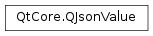

QJsonValue¶
Synopsis¶
Functions¶
- def
__eq__(other) - def
__ne__(other) - def
isArray() - def
isBool() - def
isDouble() - def
isNull() - def
isObject() - def
isString() - def
isUndefined() - def
operator[](i) - def
operator[](key) - def
swap(other) - def
toArray() - def
toArray(defaultValue) - def
toBool([defaultValue=false]) - def
toDouble([defaultValue=0]) - def
toInt([defaultValue=0]) - def
toObject() - def
toObject(defaultValue) - def
toString() - def
toString(defaultValue) - def
toVariant() - def
type()
Static functions¶
- def
fromVariant(variant)
Detailed Description¶
The
PySide2.QtCore.QJsonValueclass encapsulates a value in JSON.A value in JSON can be one of 6 basic types:
JSON is a format to store structured data. It has 6 basic data types:
- bool
QJsonValue.Bool- double
QJsonValue.Double- string
QJsonValue.String- array
QJsonValue.Array- object
QJsonValue.Object- null
QJsonValue.NullA value can represent any of the above data types. In addition,
PySide2.QtCore.QJsonValuehas one special flag to represent undefined values. This can be queried withPySide2.QtCore.QJsonValue.isUndefined().The type of the value can be queried with
PySide2.QtCore.QJsonValue.type()or accessors likePySide2.QtCore.QJsonValue.isBool(),PySide2.QtCore.QJsonValue.isString(), and so on. Likewise, the value can be converted to the type stored in it using thePySide2.QtCore.QJsonValue.toBool(),PySide2.QtCore.QJsonValue.toString()and so on.Values are strictly typed internally and contrary to
PySide2.QtCore.QVariantwill not attempt to do any implicit type conversions. This implies that converting to a type that is not stored in the value will return a default constructed return value.
QJsonValueRef¶
QJsonValueRefis a helper class forPySide2.QtCore.QJsonArrayandPySide2.QtCore.QJsonObject. When you get an object of typeQJsonValueRef, you can use it as if it were a reference to aPySide2.QtCore.QJsonValue. If you assign to it, the assignment will apply to the element in thePySide2.QtCore.QJsonArrayorPySide2.QtCore.QJsonObjectfrom which you got the reference.The following methods return
QJsonValueRef:
PySide2.QtCore.QJsonArray::operator[](int i)PySide2.QtCore.QJsonObject::operator[](constPySide2.QtCore.QString& key) constSee also
JSON Support in Qt JSON Save Game Example
-
class
PySide2.QtCore.QJsonValue([arg__1=Null])¶ -
class
PySide2.QtCore.QJsonValue(b) -
class
PySide2.QtCore.QJsonValue(a) -
class
PySide2.QtCore.QJsonValue(o) -
class
PySide2.QtCore.QJsonValue(other) -
class
PySide2.QtCore.QJsonValue(s) -
class
PySide2.QtCore.QJsonValue(s) -
class
PySide2.QtCore.QJsonValue(n) -
class
PySide2.QtCore.QJsonValue(n) -
class
PySide2.QtCore.QJsonValue(n) Parameters: - o –
PySide2.QtCore.QJsonObject - n –
PySide2.QtCore.double - b –
PySide2.QtCore.bool - a –
PySide2.QtCore.QJsonArray - other –
PySide2.QtCore.QJsonValue - s – unicode
- arg__1 –
PySide2.QtCore.QJsonValue.Type
Creates a
PySide2.QtCore.QJsonValueof typetype.The default is to create a Null value.
Creates a value of type Bool, with value
b.Creates a value of type Array, with value
a.Creates a value of type Object, with value
o.Creates a copy of
other.Creates a value of type String, with value
s.Creates a value of type String with value
s, assuming UTF-8 encoding of the input.You can disable this constructor by defining
QT_NO_CAST_FROM_ASCIIwhen you compile your applications.Creates a value of type Double, with value
n.This is an overloaded function.
Creates a value of type Double, with value
n.This is an overloaded function.
Creates a value of type Double, with value
n. NOTE: the integer limits for IEEE 754 double precision data is 2^53 (-9007199254740992 to +9007199254740992). If you pass in values outside this range expect a loss of precision to occur.- o –
-
PySide2.QtCore.QJsonValue.Type¶ This enum describes the type of the JSON value.
Constant Description QJsonValue.Null A Null value QJsonValue.Bool A boolean value. Use PySide2.QtCore.QJsonValue.toBool()to convert to a bool.QJsonValue.Double A double. Use PySide2.QtCore.QJsonValue.toDouble()to convert to a double.QJsonValue.String A string. Use PySide2.QtCore.QJsonValue.toString()to convert to aPySide2.QtCore.QString.QJsonValue.Array An array. Use PySide2.QtCore.QJsonValue.toArray()to convert to aPySide2.QtCore.QJsonArray.QJsonValue.Object An object. Use PySide2.QtCore.QJsonValue.toObject()to convert to aPySide2.QtCore.QJsonObject.QJsonValue.Undefined The value is undefined. This is usually returned as an error condition, when trying to read an out of bounds value in an array or a non existent key in an object.
-
static
PySide2.QtCore.QJsonValue.fromVariant(variant)¶ Parameters: variant – object Return type: PySide2.QtCore.QJsonValueConverts
variantto aPySide2.QtCore.QJsonValueand returns it.The conversion will convert
PySide2.QtCore.QVarianttypes as follows:QJsonValue.String. Since Qt 5.11, the resulting string will not include bracesFor all other
PySide2.QtCore.QVarianttypes a conversion to aPySide2.QtCore.QStringwill be attempted. If the returned string is empty, a NullPySide2.QtCore.QJsonValuewill be stored, otherwise a String value using the returnedPySide2.QtCore.QString.
-
PySide2.QtCore.QJsonValue.isArray()¶ Return type: PySide2.QtCore.boolReturns
trueif the value contains an array.See also
-
PySide2.QtCore.QJsonValue.isBool()¶ Return type: PySide2.QtCore.boolReturns
trueif the value contains a boolean.See also
-
PySide2.QtCore.QJsonValue.isDouble()¶ Return type: PySide2.QtCore.boolReturns
trueif the value contains a double.See also
-
PySide2.QtCore.QJsonValue.isNull()¶ Return type: PySide2.QtCore.boolReturns
trueif the value is null.
-
PySide2.QtCore.QJsonValue.isObject()¶ Return type: PySide2.QtCore.boolReturns
trueif the value contains an object.See also
-
PySide2.QtCore.QJsonValue.isString()¶ Return type: PySide2.QtCore.boolReturns
trueif the value contains a string.See also
-
PySide2.QtCore.QJsonValue.isUndefined()¶ Return type: PySide2.QtCore.boolReturns
trueif the value is undefined. This can happen in certain error cases as e.g. accessing a non existing key in aPySide2.QtCore.QJsonObject.
-
PySide2.QtCore.QJsonValue.__ne__(other)¶ Parameters: other – PySide2.QtCore.QJsonValueReturn type: PySide2.QtCore.boolReturns
trueif the value is not equal toother.
-
PySide2.QtCore.QJsonValue.__eq__(other)¶ Parameters: other – PySide2.QtCore.QJsonValueReturn type: PySide2.QtCore.boolReturns
trueif the value is equal toother.
-
PySide2.QtCore.QJsonValue.operator[](i) Parameters: i – PySide2.QtCore.intReturn type: PySide2.QtCore.QJsonValueReturns a
PySide2.QtCore.QJsonValuerepresenting the value for indexi.Equivalent to calling
PySide2.QtCore.QJsonValue.toArray().at(i).The returned
PySide2.QtCore.QJsonValueisQJsonValue.Undefined, ifiis out of bounds, or ifPySide2.QtCore.QJsonValue.isArray()is false.
-
PySide2.QtCore.QJsonValue.operator[](key) Parameters: key – unicode Return type: PySide2.QtCore.QJsonValueReturns a
PySide2.QtCore.QJsonValuerepresenting the value for the keykey.Equivalent to calling
PySide2.QtCore.QJsonValue.toObject().value(key).The returned
PySide2.QtCore.QJsonValueisQJsonValue.Undefinedif the key does not exist, or ifPySide2.QtCore.QJsonValue.isObject()is false.See also
PySide2.QtCore.QJsonValueQJsonValue.isUndefined()PySide2.QtCore.QJsonObject
-
PySide2.QtCore.QJsonValue.swap(other)¶ Parameters: other – PySide2.QtCore.QJsonValueSwaps the value
otherwith this. This operation is very fast and never fails.
-
PySide2.QtCore.QJsonValue.toArray()¶ Return type: PySide2.QtCore.QJsonArrayThis is an overloaded function.
Converts the value to an array and returns it.
If
PySide2.QtCore.QJsonValue.type()is not Array, aPySide2.QtCore.QJsonArray.QJsonArray()will be returned.
-
PySide2.QtCore.QJsonValue.toArray(defaultValue) Parameters: defaultValue – PySide2.QtCore.QJsonArrayReturn type: PySide2.QtCore.QJsonArrayConverts the value to an array and returns it.
If
PySide2.QtCore.QJsonValue.type()is not Array, thedefaultValuewill be returned.
-
PySide2.QtCore.QJsonValue.toBool([defaultValue=false])¶ Parameters: defaultValue – PySide2.QtCore.boolReturn type: PySide2.QtCore.boolConverts the value to a bool and returns it.
If
PySide2.QtCore.QJsonValue.type()is not bool, thedefaultValuewill be returned.
-
PySide2.QtCore.QJsonValue.toDouble([defaultValue=0])¶ Parameters: defaultValue – PySide2.QtCore.doubleReturn type: PySide2.QtCore.doubleConverts the value to a double and returns it.
If
PySide2.QtCore.QJsonValue.type()is not Double, thedefaultValuewill be returned.
-
PySide2.QtCore.QJsonValue.toInt([defaultValue=0])¶ Parameters: defaultValue – PySide2.QtCore.intReturn type: PySide2.QtCore.intConverts the value to an int and returns it.
If
PySide2.QtCore.QJsonValue.type()is not Double or the value is not a whole number, thedefaultValuewill be returned.
-
PySide2.QtCore.QJsonValue.toObject(defaultValue)¶ Parameters: defaultValue – PySide2.QtCore.QJsonObjectReturn type: PySide2.QtCore.QJsonObjectConverts the value to an object and returns it.
If
PySide2.QtCore.QJsonValue.type()is not Object, thedefaultValuewill be returned.
-
PySide2.QtCore.QJsonValue.toObject() Return type: PySide2.QtCore.QJsonObjectThis is an overloaded function.
Converts the value to an object and returns it.
If
PySide2.QtCore.QJsonValue.type()is not Object, theQJsonObject.QJsonObject()will be returned.
-
PySide2.QtCore.QJsonValue.toString(defaultValue)¶ Parameters: defaultValue – unicode Return type: unicode Converts the value to a
PySide2.QtCore.QStringand returns it.If
PySide2.QtCore.QJsonValue.type()is not String, thedefaultValuewill be returned.
-
PySide2.QtCore.QJsonValue.toString() Return type: unicode Converts the value to a
PySide2.QtCore.QStringand returns it.If
PySide2.QtCore.QJsonValue.type()is not String, a nullPySide2.QtCore.QStringwill be returned.See also
QString.isNull()
-
PySide2.QtCore.QJsonValue.toVariant()¶ Return type: object Converts the value to a
QVariant.QVariant().The
PySide2.QtCore.QJsonValuetypes will be converted as follows:- Null
QMetaType.Nullptr
-
PySide2.QtCore.QJsonValue.type()¶ Return type: PySide2.QtCore.QJsonValue.TypeReturns the type of the value.
See also
QJsonValue.Type
© 2018 The Qt Company Ltd. Documentation contributions included herein are the copyrights of their respective owners. The documentation provided herein is licensed under the terms of the GNU Free Documentation License version 1.3 as published by the Free Software Foundation. Qt and respective logos are trademarks of The Qt Company Ltd. in Finland and/or other countries worldwide. All other trademarks are property of their respective owners.